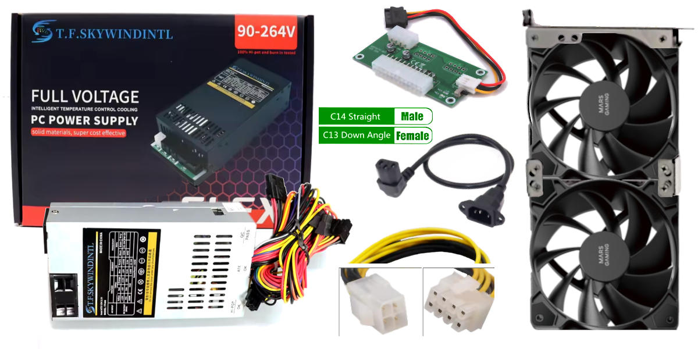
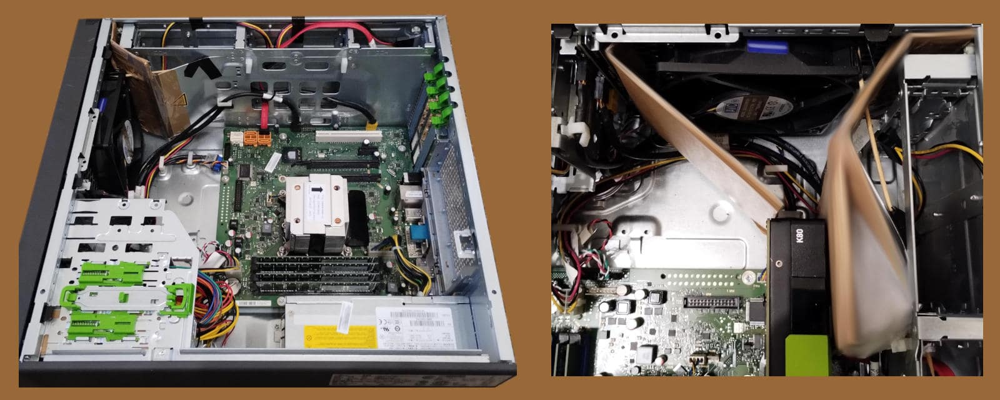
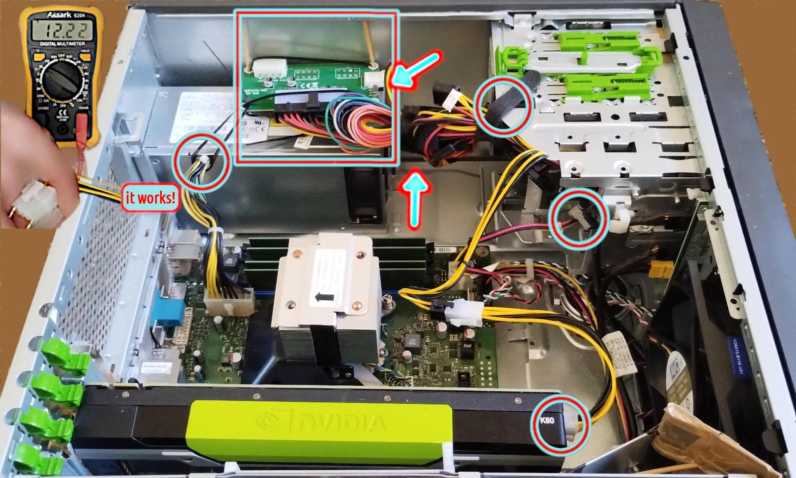

Dual PSU for Esprimo P910 installation
This article is the natural prosecution of the previous one.Dual PSU installation
Just to recap, the main problem of providing 225W TDP, 300W peak to the Nvidia Tesla K80 was mainly related with the proprietary power system embedded into the Fujitsu Esprimo P910 and therefore too hard to change without doing a bricolage that would far beyond the educational scope of this project. Therefore an industrial Flex size PSU has been chosen, which has been designed and built to power the ATX PC-based automated point of sales (PoS). For this reason it is particularly small, compared to the standard ATX power supply unit and cheap, compared with the PC-gaming market segment.ⓘ
The new PSU flex ATX provides 2 molexes and 1 CPU 4-pin connectors. Hence, it offers two ways of powering the 225W TDP (peak 300W) Tesla K80 card, each one with a different adapter.
Each molex brings a 12V line supporting up to 11A for a total of 264W of constant current flow, hence a TDP figure. Which is 85% of the K80's TDP and 114% of the peak load.
Fortunately, the CPU 4-pin connector is cabled with two yellow (12V) and two black (GND) wires which means it offers two separate lines for 22A in total, hence 264W of TDP.
In case of a single 2mm line, only 12V x 11A = 132W would be available, like using a single molex when two are required. In that case the K80's TDP should be limited accordingly, using the nvidia-smi tool. Cutting by half the TDP is not a bad idea for a system that should undergo a whole test including the venting system, after all.
This PSU's height is almost the same as a standard DVD-ROM reader, shorter and less wide (82 x 150 x 41 mm). For a confrontation, the hosted DVD-ROM was 150 x 165 x 42 mm. Plus it does not have the standard holes to receive the plate used into P910 to lock the DVD-ROM in its place.
Moreover, once this PSU replaces the DVD-DOM, it offers the 3 pole male plug on the front side of the case which is not particularly comfortable. It is safe but the cable is much more exposed to a risk of being accidentally unplugged and aesthetically unpleasant.
For these reasons, in creating a custom frame adapter, I built it in a way in which it will be easy in the near future to move the 3 pole C14F plug on the back of the tower case.

right click menu to enlarge (x2) the image
Venting system
About the venting system, I was considering to use 2 fan 5020 or 5015 to place outside the back of the case, in front of the 2 PCI slots engaged by the Tesla K80 for sucking air through its airflow tunnel, as per its factory design, while the main fan into the case would push air into it, as show here below in the image. The area to cover in such a scenario is not larger than 11 x 5 cm, for this reason the best is using 2 fan 5 x 5cm which seems optimal because the remaining area is essentially covered by the metal of the case or the PCI slot vertical locking mechanism. Unfortunately, the 5010 fans are not very powerful while the 5020+ are rare. Instead, among the 5015s as the only viable option, most of them do not offer any PWM control (connection by 2-pin cable, or 3-pin at the best) because they are designed mainly for 3D printers.
right click menu to enlarge (x4) the image
New challenges
Enlarging the image below and looking at the right side of the Nvidia K80 card, we can be assured that fitting a couple of 12cm fans overthere, in that narrow and messy space, will be not easy, if it is possible altogether, and it requires some kind of cabling rearrangement, at least.
right click menu to enlarge (x4) the image


ⓘ
For those who have a professional practice of 220V electric cabling, and the related authorisations and certifications to operate on that lines, the most customised solution is about wiring a C14F, usually protected by a 10A-220V fuse and at cheap price €1.39 also including a on/off led-lighted button. This might be done without even modding the grid but leveraging its reasonably large hexagonal pattern to pass through the cables to wire and fixing the plug externally to the grid.
In this scenario, a knot before the grid and another one after will fix the cable to the grid in a way it will not be able to be pulled by one side or another. Obviously, having the care to add an extra protection to the cable insulating sleeve towards damages by accidental pulls or frictions against the metall grid. Some heating shrinking guaina can provide a reasonable isolation in the wiring plug/switch pins while an electric plastic box will protect everything and hide the fixing bolts.
In Italy, respecting CEI-UNI normatives and standards, a light point made by a professional electrician is priced between €25 and €40 each plus the cost of the electric material, on average. From many light points to few the average unitary price increases. So, we can reasonably assume that such a mod will cost around 50 bucks. As much as bucks, I have paid the whole P910 with 16GB but without any data storage and expedition apart.
If you conclude, by all of these, that it is better for you to go to work as an electrician instead of IT guys, well... that's another story!
Preparing for installation
The two 12cm fan height is 25mm which is too much to fit between the 2nd floor of the case and the K80 that should necessarily be installed in the second PCI-express slot because the other is functionally a 4x despite it having a 16x size. Moreover, a 12 cm fan does not fit in the middle data storage bay, also. A 10 cm could fit and work, assuming the openings in that bay can vehiculate enough air-flow. While the rear upper grid can internally host two 6cm fans, as an alternative. Under such a tough scenario, another solution is necessary. Assuming that the two fans mounted on the new PCI frame can be installed into the first PCI-express slot, then they will cool the CPU and the two power supply units. At that point, it will be possible to converge all the main 12cm fan air-flow into the K80's cooling channel and leverage its design by factory .

right click menu to enlarge (x2) the image
For all these reasons, the venting system is still an open question and it might be integrated with a couple of 5cm fans to suck hot air from the K80 front while the main 12cm fan is pushing fresh air into it thanks to the diverting panels.
right click menu to enlarge (x2) the image
ⓘ
A least-effort option to give a try, is to keep the 12cm main fan in its original position, do not add any extra deflector but remove the plastic case from the Tesla K80 leaving exposed the radiators, removing the closing rear frame on the void PCI slot below the GPU card and install a 90/92 x 25mm 4-pin fan into the middle data-storage bay and connect it in a way both will work together with the PWM tuned on the hottest CPU/GPU component.
In one way or another, it sounds reasonable that the main fan will be converted for cooling the K80 also or instead of the CPU and the system in general. Which brings to the need to supply the lost air-flow with another venting system.
It is worth noticing that once solved the venting question, the home made deflector/concentrator can be used to prototype the first 3D printed version and hopefully with few further refinement to let it fit perfectly in place and doing its job.
About the PCI-e slot lost
Engaging the PCI-express first slot is not a great idea because it will be lost. However, considering that this is a dedicated system, such limitation does not seem so impactful. Unless, someone wishes to use the PCI-e 4x to leverage a non-SATA storage device with a PCI-e adapter. Which usually happens when a spare part from a previous machine is available for free and it is worth reusing it. Considering that a 128GB or a 512GB SATA3 SSD can be bought for €11 or €28 on Amazon Italia with Prime expedition included, the sacrifice of the 4x PCI-e slot with the fans. After all, it does not seem to compromise the overall value of the final system configuration. The USB 3.0 data transfer is 500 Mb/s while the SATA offers 600 MB/s but the USB 3.1+ and 3.2 much more. Let's check how fast USB3 can be on the P910 E85+, really. Booting with a TinyCore w/Linux 5.15.10 on a Netac US9 USB 3.2, R/W at 40 MB/s on USB3 and 32 MB/s. Instead, a Hitachi HTS72323 2.5" SATA 3Gbit/s HDD R/W at 80-90MB/s. For comparison The US9 on a Thinkpad x390, does 818 MB/s. When the same USB stick is connected to the P910's blue ports on the back, it does 450 MB/s.Second PSU cabling
I decided to go with the 4-pin/8-pin CPU configuration because such adapter is easier to find and cheaper to buy compared with the 2-molexes adapter.

right click menu to enlarge (x2) the image
From the left to the right and proceeding clockwise, this is the list of the highlighted points/area:
right click menu to enlarge (x2) the image
Fans kit and USB elbow
The cooling kit is made by assembling two 4-pin PWM 12 cm fans into a PCI slot support. For this task a solid screwdriver is required and a little bit of oil or cream to lubricate the screws. This trick will greatly help in tightening the screws, otherwise particularly hard to turn into the fan holes for the first time.right click menu to enlarge (x3) the image
ⓘ
At this point in the project progression, 28 days after purchasing the Tesla K80 and several batches of material received, the slight suspicion arises that perhaps it was better to deeper investigate the hardware specifications in detail rather than buy intriguing stuff online at a bargain price and then try to make it work together but... we can't beat having fun!
The main problem with the dual-fan cooling-kit is quite clear looking at this photo. It cannot be placed in the 4th slot, it fits well in the 3rd but the K80 takes 2 slots and unfortunately cannot be installed into the 1st slot.
right click menu to enlarge (x3) the image
Tools list
Here below is a list of almost all tools I have used, some reported in full specs and prices because they have been as useful as nearly indispensable. Right click menu to enlarge (2x) the image below.
ⓘ
As you can imagine, cleaning the thermal radiators is an operation which is quite important considering that cumulating dirty inside the channel and spaces between fins can seriously affect their performance, when not also obstructing the air-flow channel. An important operation that usually people forget or overlook or underestimate.
External sources
Power limiting a GPU using the Linux systemd and Nvidia smiShare alike
© 2025, Roberto A. Foglietta <roberto.foglietta@gmail.com>, CC BY-NC-ND 4.0